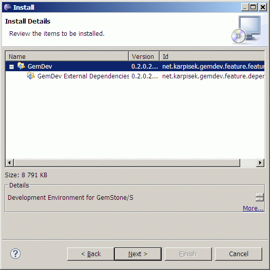

To get working Eclipse environment for GemStone, you have to install 3
separate items:
GemStone database
Scripts enabling communication between plugin and
gemstone database
Eclipse plugin itself
GemStone Installation
Either you have your own installation of GemStone or you can use VMware
appliance provided by GemStone with free license (see seaside.gemstone.com).
Plugin is developed and tested against this VMware image.
Server Scripts
To be able to connect to GemStone DB with Eclipse plugin it is
necessary to install and runVMwareBrokerServer.sh script which provides necessary functionality (for
details see Communication
with GemStone/S ).
All scripts are distributed in separate archive gemdev-server-0.2.x.zip,
which you can
download from GemDev
site.
Unpack the archive in VMware appliance and set all scripts
as executable. Default values are defined to work with configuration of gemstone in
GLASS-Appliance-1.0beta11.zip.
Start broker server with runVMwareBrokerServer.sh
Check brokerServer.log if there were any errors during startup, if not log file should contain:
topaz
1> Reading configuration from default.config
Profiles loaded: anIdentitySet( #'glass')
Starting new broker server on port 2707
Server pack archive contains:
default.config
Configuration of broker server (its port, range of ports used for
creating sessions) and connection profiles to all GS databases which
will be made available to uses. By default it contains connection
profile for connecting to GLASS VMware database. Configuration is read
by runBrokerServer.sh script.
runBrokerServer.sh
Broker server main script. Handles creating new GemStone
sessions.
runSessionServer.sh
Session server script which is used by broker server for starting new
GemStone sessions. Handles all requests coming from Eclipse to
particular GemStone session.
stopServer.sh
This script is intended for safe stopping of broker and/or session
servers (started by run*Server.sh
scripts).
runVMwareBrokerServer.sh
(Optional) this is convenience script for GLASS VMware Image.
Uses default parameters to start new broker server.
GemDev Plugin Installation
Download Eclipse 3.5 from Eclipse downloads
site
(for example Eclipse IDE for Java Developers
distribution)
page)
Download GemDev from GemDev site
(it is currently distributed as .zip containing
archived update site with plugin
and all dependencies)
Go to Help
> Install New Software...
Use Add..
button and add downloaded
GemDev update site archive as source
Select GemDev and
press Next
On Dependencies page you can review features which will be
installed and then press Next 
On Review Licenses page, please read the licenses and if
you agree accept them and press Finish
Installation of plugin will be done, you can be asked for
confirmation of installation of unsigned plugins - in that case please
accept
After installation is complete, you will be asked if
Eclipse should restart itself - please accept it